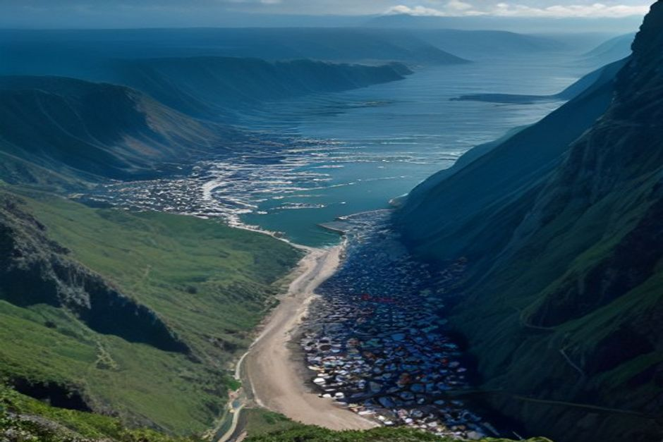

Die Fajã dos Padres liegt an Madeiras Südküste am Fuß einer rund 300 Meter hohen Klippe. Eine Straße gibt es nicht: Sie fahren mit der Seilbahn hinunter oder kommen per Boot. Unten wartet eine kleine Bananenplantage direkt am Atlantik, ein Strand aus dunklem Kiesel und eines der wenigen Badeziele der Insel, die man ohne Hotelpool erreicht. Dieser Ratgeber erklärt, was Sie dort erwartet, wie der Besuch praktisch abläuft und worin sich die beiden Wege unterscheiden.
Das Wichtigste in Kürze
- Lage: Südküste, bei Câmara de Lobos, westlich von Funchal.
- Zugang: Seilbahn von der Klippe oder per Boot. Keine Straße.
- Strand: dunkler Vulkankiesel und Fels, kein Sand.
- Baden: meist geschützt, dazu ein kleines Salzwasserbecken für unruhige Tage.
- Beste Zeit: später Frühling bis früher Herbst, am ruhigsten am Vormittag.
- Essen: Restaurant direkt am Wasser, in der Hochsaison besser reservieren.
Was ist die Fajã dos Padres eigentlich?
Eine Fajã ist eine schmale, flache Landzunge am Meer, entstanden durch einen alten Erdrutsch oder Lavastrom. Dieser Streifen liegt auf Meereshöhe direkt unter den Klippen bei Câmara de Lobos. Mit dem Auto sind es von Funchal gut 15 Minuten bis zum Klippenrand, von wo die Seilbahn abfährt.
Der Name heißt „Fajã der Priester“. Jesuitenpater bewirtschafteten das Land ab dem 18. Jahrhundert und pflanzten Malvasia-Reben, aus deren Trauben noch heute Madeirawein entsteht. Heute ist das Anwesen in Privatbesitz und ein Bio-Betrieb, zertifiziert seit 2008. Auf den Terrassen wachsen Bananen, Mangos, Avocados und Wein.

Seilbahn zur Fajã dos Padres: So kommen Sie hinunter
Die Seilbahn überwindet die rund 300 Meter Höhenunterschied seit 2003. Sie setzt Sie oben an den Terrassen ab. Von dort geht es zu Fuß durch die Bananenplantage hinunter zum Wasser. Die aktuellen Fahrpreise und Betriebszeiten kenne ich nicht gesichert, fragen Sie diese bitte direkt vor Ort oder beim Betreiber ab, besonders im Winter.
Vor 2003 gab es nur den Seeweg. Priester, Landarbeiter und Händler erreichten die Fajã über zwei Jahrhunderte ausschließlich per Boot. Das ist bis heute die zweite Möglichkeit, und sie fühlt sich anders an.
Seilbahn oder Boot: Der Unterschied
Wer mit der Seilbahn kommt, bekommt die Fajã als Ausflugsziel an Land: Plantage, Spaziergang, Mittagessen, ein Bad. Wer per Boot kommt, sieht erst die Klippe von unten, ankert vor der Bucht und springt direkt ins Wasser. Die Wartezeit an der Seilbahn entfällt dabei ganz.
Für wen was passt:
- Seilbahn: Sie möchten die Plantage sehen, in Ruhe essen und die Fajã zu Fuß erkunden.
- Boot: Das Baden steht im Mittelpunkt, und Sie möchten die Küste ohnehin vom Wasser aus sehen.
Praia da Fajã dos Padres: Baden und Strand
Ja, hier kann man baden, und das gern. Die Klippen schützen die Bucht vor dem Wind, der das Wasser an anderen Stellen der Südküste aufwühlt. An ruhigen Tagen liegt sie glatt und klar da, gut zum Schnorcheln entlang der Felsen, zum Paddeln oder zum Sprung vom Boot. Bei stärkerem Schwell gibt es auf der Fajã ein kleines Salzwasserbecken.
Wichtig für alle, die einen Sandstrand erwarten: Es gibt keinen. Wie fast überall auf Madeira ist der Strand dunkler Vulkankiesel und Fels, und rund um Funchal gibt es keinen natürlichen Sandstrand. Barfuß geht es mit Vorsicht, Badeschuhe machen Ein- und Ausstieg aber deutlich angenehmer, vor allem beim Sprung vom Boot.
Restaurant und Übernachtung
Am Fuß der Seilbahn, direkt am Wasser, gibt es ein Restaurant mit gegrilltem Fisch und Produkten aus dem eigenen Anbau. In der Hochsaison ist es gut besucht: Wer extra zum Essen hinunterfährt, sollte vorher reservieren. Auf dem Anwesen lassen sich außerdem einige Cottages für längere Aufenthalte mieten.
Wenn Sie nur für einen Badestopp per Boot kommen, spielt das Restaurant keine Rolle. Bei uns gibt es an Bord Essen und Getränke.
Wann Sie die Fajã dos Padres besuchen sollten
Von spätem Frühling bis frühem Herbst ist der Atlantik ruhig genug für ein entspanntes Bad, und die Bucht bekommt weniger direkten Schwell ab. Am stillsten ist das Wasser meist am Vormittag, bevor nachmittags der Wind an der Südküste auffrischt. Außerhalb des Sommers ist das Wasser spürbar kühler, dann ist die Plantage mit Seilbahn und Mittagessen der bessere Grund für einen Besuch.
Planen Sie mit Puffer: Wetter und Seegang entscheiden, ob ein Badestopp möglich ist. Das Meer macht keine Zusagen.
Per Boot ab Funchal: Badestopp an der Fajã dos Padres
Die Fajã dos Padres gehört zur privaten Tagestour von Chifbay ab der Marina do Funchal, Steg C. Das ganze Boot gehört nur Ihrer Gruppe, bis zu 5 Gäste, mit zwei lizenzierten Skippern aus Madeira. Abfahrt ist um 10:00 oder um 14:00 Uhr.
- 2 Std. 30 bis Ribeira Brava: 500 € für das ganze Boot.
- 3 Std. weiter bis Ponta do Sol: 600 € für das ganze Boot.
Unterwegs sehen Sie Câmara de Lobos und Cabo Girão, dann folgt der Badestopp an der Fajã dos Padres mit Paddleboards. Essen und Getränke an Bord, ein Insta360-360°-Video, Drohnenaufnahmen (wetterabhängig) und Fotos mit einer echten Kamera sind bei jeder Fahrt dabei. Die Preise gelten pro Boot, nie pro Person. Kostenlos stornieren können Sie bis 24 Stunden vor Abfahrt.
Mehr zur Auswahl finden Sie in unserem Überblick Bootstouren auf Madeira und auf der Seite zur privaten Bootstour. Wer lieber am Abend fährt: Die Sonnenuntergangsfahrt startet 1 Std. 15 vor Sonnenuntergang, führt bis Cabo Girão und hat keinen Badestopp. Praktische Hinweise stehen unter Praktisches.
Zwei Jahrhunderte Priester, Bananen und eine Seilbahn: Dem Wasser ist es egal, wie Sie hergekommen sind.
Unser Rat
Wollen Sie die Plantage sehen und in Ruhe essen, nehmen Sie die Seilbahn. Geht es Ihnen vor allem ums Baden und um die Küste von der Seeseite, ist das Boot die bessere Wahl. Beides zusammen an einem Tag ist selten nötig. Und die Fajã bleibt das, was sie ist: ein ruhiger Fleck, an dem das Wasser der eigentliche Grund für den Besuch ist.
Weitere Berichte finden Sie im Journal, Erfahrungen unserer Gäste unter Bewertungen, alle Touren unter Touren.